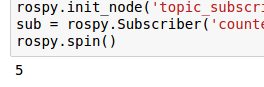

<img src="img/kobuki_wall.png" width="800"/>
<!-- <img src="img/rosject.png" width="250" style="float:left;" /> --><!-- * ROSject Link: http://bit.ly/2LM5WgR* Package Name: **turtlebot_gazebo*** Launch File: **main.launch**--><b>Estimated time to completion:</b> 2.5 hours<br><br><b>What will you learn with this unit?</b>* What is a Subscriber and how to create one* How to create your own messageEstimated time to completion: 2.5 hours
What will you learn with this unit?
<img src="img/kobuki.jpg" width="212" height="236" />
You've learned that a topic is a channel where nodes can either write or read information. You've also seen that you can write into a topic using a publisher, so you may be thinking that there should also be some kind of similar tool to read information from a topic. And you're right! That's called a subscriber. <b>A subscriber is a node that reads information from a topic</b>. Let's execute the next code:You've learned that a topic is a channel where nodes can either write or read information. You've also seen that you can write into a topic using a publisher, so you may be thinking that there should also be some kind of similar tool to read information from a topic. And you're right! That's called a subscriber. A subscriber is a node that reads information from a topic. Let's execute the next code:
<p style="background:#407EAF;color:white">**Example 2.2**</p><br>Execute the following Python code <a href="#prg-2-2">simple_topic_subscriber.py</a> by clicking on it and then clicking on the play button on the top righ-hand corner of the IPython notebook.<br> <div class='white_bg'><img src="img/font-awesome_step-forward.png" style="float:left"/><br><br></div><br><br>You can also press **[CTRL]+[Enter]** to execute it.Example 2.2
<p style="background:#407EAF;color:white">**END Example 2.2**</p>END Example 2.2
<p style="background:#3B8F10;color:white;" id="prg-2-2">**Python Program {2.2}: simple_topic_subscriber.py** </p><br>Python Program {2.2}: simple_topic_subscriber.py
#! /usr/bin/env pythonimport rospyfrom std_msgs.msg import Int32 def callback(msg): print msg.datarospy.init_node('topic_subscriber')sub = rospy.Subscriber('counter', Int32, callback)rospy.spin()<p style="background:#3B8F10;color:white;">**END Python Program {2.2}: simple_topic_subscriber.py** </p><br>END Python Program {2.2}: simple_topic_subscriber.py
What's up? Nothing happened again? Well, that's not actually true... Let's do some checks.What's up? Nothing happened again? Well, that's not actually true... Let's do some checks.
Go to your webshell and type the following:Go to your webshell and type the following:
<table style="float:left;background: #407EAF"><tr><th><p class="transparent">Execute in WebShell #1</p></th></tr></table>|
Execute in WebShell #1 |
|---|
rostopic echo /counterYou should see an output like this:You should see an output like this:
<table class="transparent float_l"><tr><th><p style="background: #407EAF">WebShell #1 Output</p></th></tr></table>|
WebShell #1 Output |
|---|
user ~ $ rostopic echo /counterWARNING: no messages received and simulated time is active.Is /clock being published?And what does this mean? This means that **nobody is publishing into the /counter topic**, so there's no information to be read. Let's then publish something into the topic and see what happens. For that, let's introduce a new command:And what does this mean? This means that nobody is publishing into the /counter topic, so there's no information to be read. Let's then publish something into the topic and see what happens. For that, let's introduce a new command:
rostopic pub <topic_name> <message_type> <value>This command will publish the message you specify with the value you specify, in the topic you specify.This command will publish the message you specify with the value you specify, in the topic you specify.
Open another webshell (leave the one with the **_rostopic echo_** opened) and type the next command:Open another webshell (leave the one with the rostopic echo opened) and type the next command:
<table style="float:left;background: #407EAF"><tr><th><p class="transparent">Execute in WebShell #2</p></th></tr></table>|
Execute in WebShell #2 |
|---|
rostopic pub /counter std_msgs/Int32 5Now check the output of the console where you did the **_rostopic echo_** again. You should see something like this: . Now check the output of the console where you did the rostopic echo again. You should see something like this: .
<table class="transparent float_l"><tr><th><p style="background: #407EAF">WebShell #1 Output</p></th></tr></table>|
WebShell #1 Output |
|---|
user ~ $ rostopic echo /counterWARNING: no messages received and simulated time is active.Is /clock being published?data:5---This means that the value you published has been received by your subscriber program (which prints the value on the screen).This means that the value you published has been received by your subscriber program (which prints the value on the screen).
Now check the output of the code you've just executed in the IPython notebook (that's the part right down the code). You should see something like this:Now check the output of the code you've just executed in the IPython notebook (that's the part right down the code). You should see something like this:
<img src="img/ipython_output.png" />
Before explaining everything with more detail, let's explain the code you executed.Before explaining everything with more detail, let's explain the code you executed.
#! /usr/bin/env pythonimport rospy from std_msgs.msg import Int32 def callback(msg): # Define a function called 'callback' that receives a parameter # named 'msg' print msg.data # Print the value 'data' inside the 'msg' parameterrospy.init_node('topic_subscriber') # Initiate a Node called 'topic_subscriber'sub = rospy.Subscriber('/counter', Int32, callback) # Create a Subscriber object that will listen to the /counter # topic and will cal the 'callback' function each time it reads # something from the topicrospy.spin() # Create a loop that will keep the program in executionSo now, let's explain what has just happened. You've basically created a subscriber node that listens to the /counter topic, and each time it reads something, it calls a function that does a print of the msg. Initially, nothing happened since nobody was publishing into the /counter topic, but when you executed the <i>rostopic pub</i> command, you published a message into the /counter topic, so the function has printed the number in the IPython's output and you could also see that message in the <i>rostopic echo</i> output. Now everything makes sense, right?So now, let's explain what has just happened. You've basically created a subscriber node that listens to the /counter topic, and each time it reads something, it calls a function that does a print of the msg. Initially, nothing happened since nobody was publishing into the /counter topic, but when you executed the rostopic pub command, you published a message into the /counter topic, so the function has printed the number in the IPython's output and you could also see that message in the rostopic echo output. Now everything makes sense, right?
Now let's do some exercises to put into practice what you've just learned!Now let's do some exercises to put into practice what you've just learned!
<p id="ex-2.2" style="background:#EE9023;color:white;">**Exercise 2.2**</p><br>Create a package that launches the code. Modify the code in order to print the odometry of the robot.<br><p style="background:#3B8F10;color:white;">**Data for Exercice 2.2**</p><br><ol><li><font class='ign_green'><b>The odometry of the robot is published by the robot into the <i>/odom</i> topic.</b></font></li><li><font class='ign_green'><b>You will need to figure out what message uses the <i>/odom</i> topic, and how the structure of this message is.</b></font></li></ol>Exercise 2.2
Data for Exercice 2.2
<p id="ex-2.2" style="background:#EE9023;color:white;">**END Exercise 2.2**</p>END Exercise 2.2
<p style="background:green;color:white;">Solution Exercise 2.2</p>Solution Exercise 2.2
Please Try to do it by yourself unless you get stuck or need some inspiration. You will learn much more if you fight for each exercise.Please Try to do it by yourself unless you get stuck or need some inspiration. You will learn much more if you fight for each exercise.
<img src="img/robotignite_logo_text.png"/>Follow this link to open the solutions notebook for Unit2 Topics Part2:[Topics Part2 Solutions](extra_files/unit2_topics_part2_solutions.ipynb)Follow this link to open the solutions notebook for Unit2 Topics Part2:Topics Part2 Solutions
<p style="background:green;color:white;">END Solution Exercise 2.2</p>END Solution Exercise 2.2
<p style="background:#EE9023;color:white;">**Exercise 2.3**</p><br>1. Add to <a href="#ex-2.2">{Exercice 2.2}</a>, a Python file that creates a publisher that indicates the age of the robot.<br>2. For that, you'll need to create a new message called **Age.msg**. To see how you can do that, have a look at the detailed description <a href="#custom_topic_compilation">How to prepare CMakeLists.txt and package.xml for custom topic message compilation.</a>Exercise 2.3
<p id="ex-2.2" style="background:#EE9023;color:white;">**END Exercise 2.3**</p>END Exercise 2.3
<p style="background:green;color:white;">Solution Exercise 2.3</p>Solution Exercise 2.3
Please Try to do it by yourself unless you get stuck or need some inspiration. You will learn much more if you fight for each exercise.Please Try to do it by yourself unless you get stuck or need some inspiration. You will learn much more if you fight for each exercise.
<img src="img/robotignite_logo_text.png"/>Follow this link to open the solutions notebook for Unit2 Topics Part2:[Topics Part2 Solutions](extra_files/unit2_topics_part2_solutions.ipynb)Follow this link to open the solutions notebook for Unit2 Topics Part2:Topics Part2 Solutions
<p style="background:green;color:white;">END Solution Exercise 2.3</p>END Solution Exercise 2.3
<div id="custom_topic_compilation"></div>## How to Prepare CMakeLists.txt and package.xml for Custom Topic Message CompilationNow you may be wondering... in case I need to publish some data that is not an Int32, which type of message should I use? You can use all ROS defined (<i>**rosmsg list**</i>) messages. But, in case none fit your needs, you can create a new one.Now you may be wondering... in case I need to publish some data that is not an Int32, which type of message should I use? You can use all ROS defined (rosmsg list) messages. But, in case none fit your needs, you can create a new one.
In order to create a new message, you will need to do the following steps:1. Create a directory named 'msg' inside your package2. Inside this directory, create a file named Name_of_your_message.msg (more information down)3. Modify CMakeLists.txt file (more information down)4. Modify package.xml file (more information down)5. Compile6. Use in codeIn order to create a new message, you will need to do the following steps:
For example, let's create a message that indicates age, with years, months, and days.For example, let's create a message that indicates age, with years, months, and days.
1) Create a directory msg in your package.1) Create a directory msg in your package.
roscd <package_name>mkdir msg2) The <b>Age.msg</b> file must contain this:2) The Age.msg file must contain this:
float32 yearsfloat32 monthsfloat32 days3) <b>In CMakeLists.txt</b>3) In CMakeLists.txt
You will have to edit four functions inside CMakeLists.txt:* <span class="ign_green"><a href="#find_package">find_package()</a></span>* <span class="ign_green"><a href="#add_message_files">add_message_files()</a></span>* <span class="ign_green"><a href="#generate_messages">generate_messages()</a></span>* <span class="ign_green"><a href="#catkin_package">catkin_package()</a></span>You will have to edit four functions inside CMakeLists.txt:
This is where all the packages required to COMPILE the messages of the topics, services, and actions go.In package.xml, you have to state them as <b>build_depend</b>.This is where all the packages required to COMPILE the messages of the topics, services, and actions go. In package.xml, you have to state them as build_depend.
<font class='ign_green'><b>HINT 1: If you open the CMakeLists.txt file in your IDE, you'll see that almost all of the file is commented. This includes some of the lines you will have to modify. Instead of copying and pasting the lines below, find the equivalents in the file and uncomment them, and then add the parts that are missing.</b></font>find_package(catkin REQUIRED COMPONENTS rospy std_msgs message_generation # Add message_generation here, after the other packages)### <span style="color: green;" id="add_message_files">II. add_message_files()</span>This function includes all of the messages of this package (in the msg folder) to be compiled. The file should look like this.This function includes all of the messages of this package (in the msg folder) to be compiled. The file should look like this.
add_message_files( FILES Age.msg ) # Dont Forget to UNCOMENT the parenthesis and add_message_files TOO### <span style="color: green;" id="generate_messages">III. generate_messages()</span>Here is where the packages needed for the messages compilation are imported.Here is where the packages needed for the messages compilation are imported.
generate_messages( DEPENDENCIES std_msgs) # Dont Forget to uncoment here TOO### <span style="color: green;" id="catkin_package">IV. catkin_package()</span>State here all of the packages that will be needed by someone that executes something from your package.All of the packages stated here must be in the package.xml as <b>exec_depend</b>.State here all of the packages that will be needed by someone that executes something from your package. All of the packages stated here must be in the package.xml as exec_depend.
catkin_package( CATKIN_DEPENDS rospy message_runtime # This will NOT be the only thing here)Summarizing, this is the minimum expression of what is needed for the **CMakelists.txt** file to work:Summarizing, this is the minimum expression of what is needed for the CMakelists.txt file to work:
<p style="color: red;"><b>Note: </b>Keep in mind that the name of the package in the following example is <b>topic_ex</b>, so in your case, the name of the package may be different.</p>Note: Keep in mind that the name of the package in the following example is topic_ex, so in your case, the name of the package may be different.
cmake_minimum_required(VERSION 2.8.3)project(topic_ex)find_package(catkin REQUIRED COMPONENTS std_msgs message_generation)add_message_files( FILES Age.msg)generate_messages( DEPENDENCIES std_msgs)catkin_package( CATKIN_DEPENDS rospy message_runtime)include_directories( ${catkin_INCLUDE_DIRS})4) <b>Modify package.xml</b>4) Modify package.xml
Just add these 2 lines to the package.xml file.Just add these 2 lines to the package.xml file.
<build_depend>message_generation</build_depend> <build_export_depend>message_runtime</build_export_depend><exec_depend>message_runtime</exec_depend>This is the minimum expression of the package.xmlThis is the minimum expression of the package.xml
<p style="color: red;"><b>Note: </b>Keep in mind that the name of the package in the following example is <b>topic_ex</b>, so in your case, the name of the package may be different.</p>Note: Keep in mind that the name of the package in the following example is topic_ex, so in your case, the name of the package may be different.
<?xml version="1.0"?><package format="2"> <name>topic_ex</name> <version>0.0.0</version> <description>The topic_ex package</description> <maintainer email="user@todo.todo">user</maintainer> <license>TODO</license> <buildtool_depend>catkin</buildtool_depend> <build_depend>rospy</build_depend> <build_depend>std_msgs</build_depend> <build_depend>message_generation</build_depend> <build_export_depend>rospy</build_export_depend> <exec_depend>rospy</exec_depend> <build_export_depend>std_msgs</build_export_depend> <exec_depend>std_msgs</exec_depend> <build_export_depend>message_runtime</build_export_depend> <exec_depend>message_runtime</exec_depend> <export> </export></package>5) Now you have to compile the msgs. To do this, you have to type in a WebShell:5) Now you have to compile the msgs. To do this, you have to type in a WebShell:
<table style="float:left;background: #407EAF"><tr><th><p class="transparent">Execute in WebShell #1</p></th></tr></table>|
Execute in WebShell #1 |
|---|
roscd; cd ..catkin_makesource devel/setup.bash<span style="color: red;">**VERY IMPORTANT**: When you compile new messages, there is still an extra step before you can use the messages. You have to type in the Webshell, in the **catkin_ws** directory, the following command: **<i>source devel/setup.bash</i>**. <br><br>This executes this bash file that sets, among other things, the newly generated messages created through the catkin_make.<br><br>If you don't do this, it might give you a python import error, saying it doesn't find the message generated.</span>
VERY IMPORTANT: When you compile new messages, there is still an extra step before you can use the messages. You have to type in the Webshell, in the catkin_ws directory, the following command: source devel/setup.bash.
This executes this bash file that sets, among other things, the newly generated messages created through the catkin_make.
If you don't do this, it might give you a python import error, saying it doesn't find the message generated.
<font class='ign_green'><b>HINT 2: To verify that your message has been created successfully, type in your webshell <i>rosmsg show Age</i>. If the structure of the Age message appears, it will mean that your message has been created successfully and it's ready to be used in your ROS programs.</b></font><table style="float:left;background: #407EAF"><tr><th><p class="transparent">Execute in WebShell #1</p></th></tr></table>|
Execute in WebShell #1 |
|---|
rosmsg show Age<table class="transparent float_l"><tr><th><p style="background: #407EAF">WebShell #1 Output</p></th></tr></table>|
WebShell #1 Output |
|---|
user ~ $ rosmsg show Age[topic_ex/Age]:float32 yearsfloat32 monthsfloat32 days<table style="float:left;" class="transparent"><tr><th><p style="background: orange">**WARNING**</p><br>There is an issue in ROS that could give you problems when importing msgs from the msg directory. If your package has the same name as the Python file that does the import of the msg, this will give an error saying that it doesn't find the msg element. This is due to the way Python works. Therefore, you have to be careful to not name the Python file exactly the same as its parent package.<br><br>Example:<br>Package name = "my_package"<br>Python file name = "my_package.py"<br><br>This will give an import error because it will try to import the messagefrom the <span style="color:orange">my_package.py file, from a directory .msg that doesn't exists.</span></th></tr></table><br>|
WARNING There is an issue in ROS that could give you problems when importing msgs from the msg directory. If your package has the same name as the Python file that does the import of the msg, this will give an error saying that it doesn't find the msg element. This is due to the way Python works. Therefore, you have to be careful to not name the Python file exactly the same as its parent package. Example: Package name = "my_package" Python file name = "my_package.py" This will give an import error because it will try to import the messagefrom the my_package.py file, from a directory .msg that doesn't exists. |
|---|
<img src="img/robotignite_logo_text.png"/>With all you've learned during this course, you're now able to do a small Quiz to put everything together. Subscribers, Publisher, Messages... you will need to use all of this concepts in order to succeed!With all you've learned during this course, you're now able to do a small Quiz to put everything together. Subscribers, Publisher, Messages... you will need to use all of this concepts in order to succeed!
For evaluating this Quiz, we will ask you to perform different tasks. For each task, very **specific instructions** will be provided: name of the package, names of the launch files and Python scripts, topic names to use, etc. It is **VERY IMPORTANT** that you strictly follow these instructions, since they will allow our automated correction system to properly test your Quiz, and assign a score to it. If the names you use are different from the ones specified in the exam instructions, your exercise will be marked as **FAILED**, even though it works correctly.For evaluating this Quiz, we will ask you to perform different tasks. For each task, very specific instructions will be provided: name of the package, names of the launch files and Python scripts, topic names to use, etc.
It is VERY IMPORTANT that you strictly follow these instructions, since they will allow our automated correction system to properly test your Quiz, and assign a score to it. If the names you use are different from the ones specified in the exam instructions, your exercise will be marked as FAILED, even though it works correctly.
In this Quiz, you will create a code to make the robot avoid the wall that is in front of him. To help you achieve this, let's divide the project down into smaller units:1. Create a Publisher that writes into the **/cmd_vel** topic in order to move the robot.2. Create a Subscriber that reads from the **/kobuki/laser/scan topic**. This is the topic where the laser publishes its data.3. Depending on the readings you receive from the laser's topic, you'll have to change the data you're sending to the /cmd_vel topic, in order to avoid the wall. This means, use the values of the laser to decide.In this Quiz, you will create a code to make the robot avoid the wall that is in front of him. To help you achieve this, let's divide the project down into smaller units:
<font class='ign_green'><b>HINT 1: The data that is published into the /kobuki/laser/scan topic has a large structure. For this project, you just have to pay attention to the 'ranges' array.</b></font><table style="float:left;background: #407EAF"><tr><th><p class="transparent">Execute in WebShell #1</p></th></tr></table>|
Execute in WebShell #1 |
|---|
rosmsg show sensor_msgs/LaserScan<table class="transparent float_l"><tr><th><p style="background: #407EAF">WebShell #1 Output</p></th></tr></table>|
WebShell #1 Output |
|---|
user ~ $ rosmsg show sensor_msgs/LaserScanstd_msgs/Header header uint32 seq time stamp string frame_idfloat32 angle_minfloat32 angle_maxfloat32 angle_incrementfloat32 time_incrementfloat32 scan_timefloat32 range_minfloat32 range_maxfloat32[] ranges <-- Use only this onefloat32[] intensities<font class='ign_green'><b>HINT 2: The 'ranges' array has a lot of values. The ones that are in the middle of the array represent the distances that the laser is detecting right in front of him. This means that the values in the middle of the array will be the ones that detect the wall. So in order to avoid the wall, you just have to read these values.</b></font><font class='ign_green'><b>HINT 3: The laser has a range of 30m. When you get readings of values around 30, it means that the laser isn't detecting anything. If you get a value that is under 30, this will mean that the laser is detecting some kind of obstacle in that direction (the wall).</b></font><font class='ign_green'><b>HINT 4: The scope of the laser is about 180 degrees from right to left. This means that the values at the beginning and at the end of the 'ranges' array will be the ones related to the readings on the sides of the laser (left and right), while the values in the middle of the array will be the ones related to the front of the laser.</b></font><p style="background:green;color:white;">Specifications</p>Specifications
* The name of the package where you'll place all the code related to the Quiz will be **topics_quiz**.* The name of the launch file that will start your program will be **topics_quiz.launch**.* The name of the ROS node that will be launched by your program will be **topics_quiz_node**.<p style="background:green;color:white;">Quiz Correction</p><br>When you have finished the Quiz, you can correct it in order to get a Mark. For that, just click on the following button at the top of this Notebook.<br><br><img src="img/correct_quiz_btn.png" width="150"/>Quiz Correction
<p style="background:red;color:white;">IMPORTANT</p><br><img src="img/warning_mark.png" width="200" /><br>Quizes can only be done once. This means that, once you correct your Quiz, and get a score for it, you won't be able to do it again and improve your score. So, be sure enough when you decide to correct your Quiz!IMPORTANT

ROS Topics: http://wiki.ros.org/TopicsROS Messages: http://wiki.ros.org/Messagesmsg Files: http://wiki.ros.org/msgPublisher and Subscriber 1: http://wiki.ros.org/ROS/Tutorials/WritingPublisherSubscriber%28python%29Publisher and Subscriber 2: http://wiki.ros.org/ROS/Tutorials/ExaminingPublisherSubscriberROS Topics: http://wiki.ros.org/Topics
ROS Messages: http://wiki.ros.org/Messages
msg Files: http://wiki.ros.org/msg
Publisher and Subscriber 1: http://wiki.ros.org/ROS/Tutorials/WritingPublisherSubscriber%28python%29
Publisher and Subscriber 2: http://wiki.ros.org/ROS/Tutorials/ExaminingPublisherSubscriber